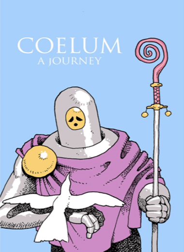

... Is a game about exploration. Exploration of a new world, of a strange
culture, of a religion and its followers. Get a taste of Coelum as you talk to
its inhabitants and explore its world.

Analysis
Look and listen in the game: What features (or assets) are helping to create an
illusion of exploring a world? How simple or complex are the graphics and
media?
How simple or complex are the settings in the game? How far can you explore and
what makes the settings distinctive?
What kind(s) of character(s) are you invited to control? Are you invited to be
multiple characters? Or just one character type?
How do you get to know the character(s) you are playing? What details make them
distinctive, quirky, memorable, etc?
What kinds of interactions do you have with NPC characters?
How are you challenged as a game player in this game? What are you being asked
to investigate, where do you get stuck, and how do you make progress in the
game?
What kinds of objects do you interact with in the game? Do you pick up written
messages, do you ever need to consume food in the game, do you pick up
functional things you need to get other things work?
Comment on sounds and music in your game. How are sounds built into the game,
and is it effective, supportive of game play? Do the sounds in the game provide
clues of what is happening, or have a particular function in the game?
Where (if ever) do you see the game comment on itself in a meta way as a
fictional, constructed system (as a game)?
Where and how do you see the game respond to or comment on our reality? Or what
cultural issues from our world do you see reflected in this game?